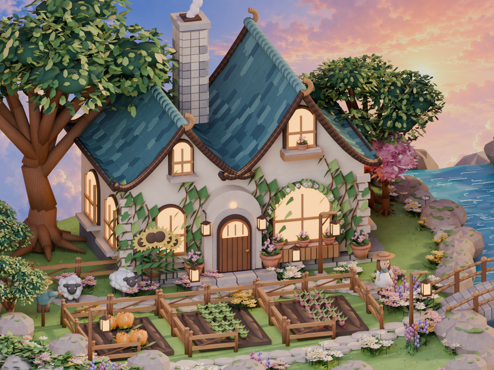
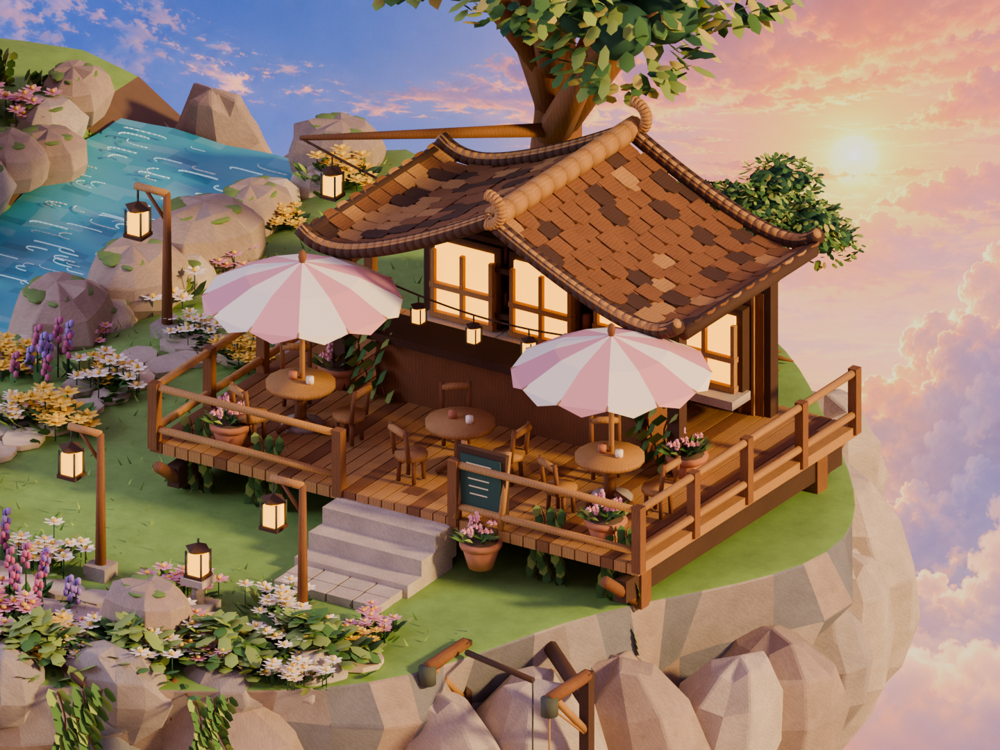
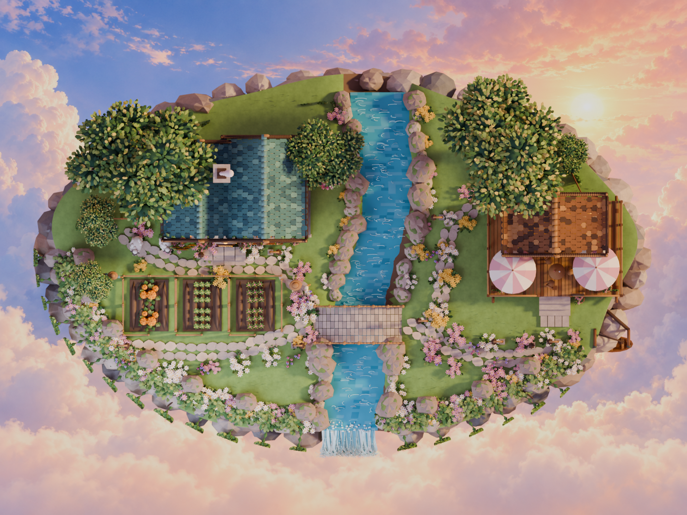
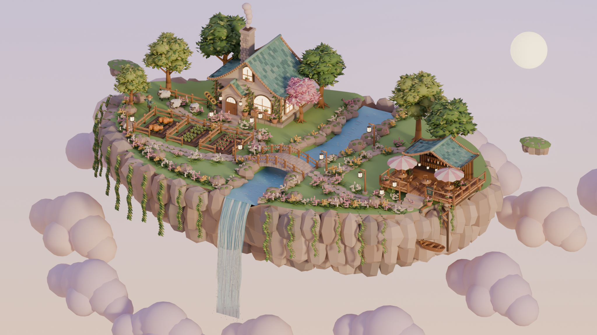

双山墙小屋、黄昏花园与云边咖啡馆
小岛、建筑、植物、人物、水体与装饰均为三维几何；天空使用独立生成的二维云海背景。本轮为参考图导向的精修，仍存在模型形态与布局差异，并非逐像素相同。网页版本经过减面，光照与 Blender 离线渲染有所不同。




 本轮精修 Blender / Cycles · 2048 × 1536
本轮精修 Blender / Cycles · 2048 × 1536